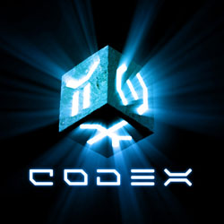

| DECIPHERING THE PAST | ||||
| Do you enjoy cracking codes and solving riddles?
Then take part in our free trails based on Channel 4’s history game show, Codex. If you can crack the Codex you could win your very own out-of-hours private tour of the British Museum with an expert curator! Ready to crack the Codex at the British Museum? There are 2 different trails on offer and both are open to all ages. Download the trails here and bring a copy to the Great Court stand in the British Museum where you will begin. Pick up a map and just follow the instructions on the leaflet. (Trail leaflet also available from the Codex desk in the Great Court). Download trail A Download trail B First Prize (one for each trail):
|
 | |||
| About Codex | ||||
| Presented by Tony Robinson, Codex is a Channel 4 television programme that follows teams of code breakers as they attempt to unravel a secret code through a series of challenges based on some of the museum’s six million artefacts. For more information about the Channel 4 series click here The British Museum is not responsible for the content of external sites |
||||
Copyright © British Museum |
||||